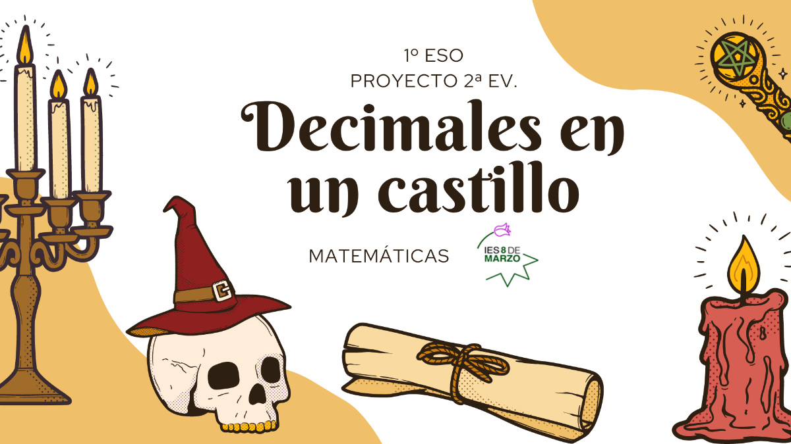
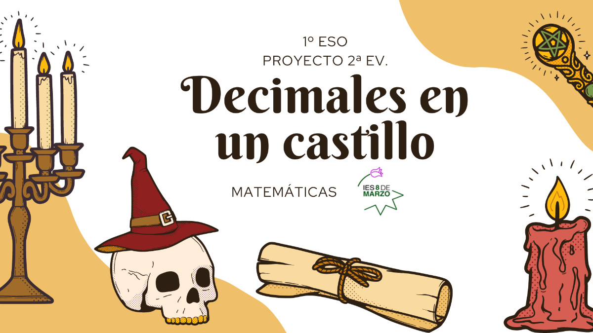
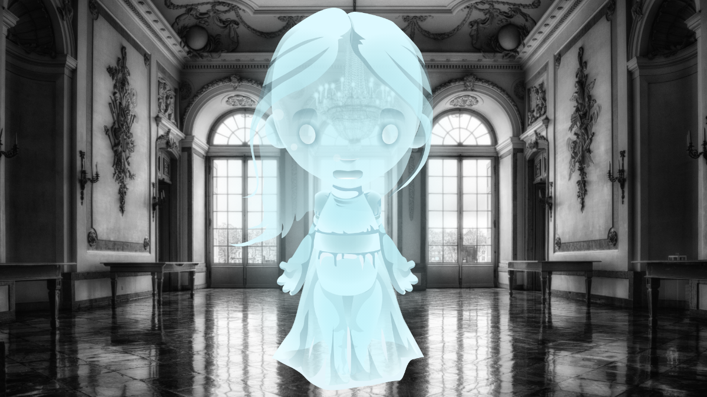
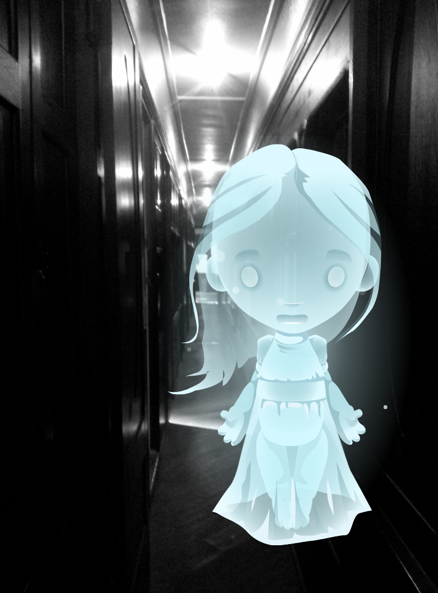
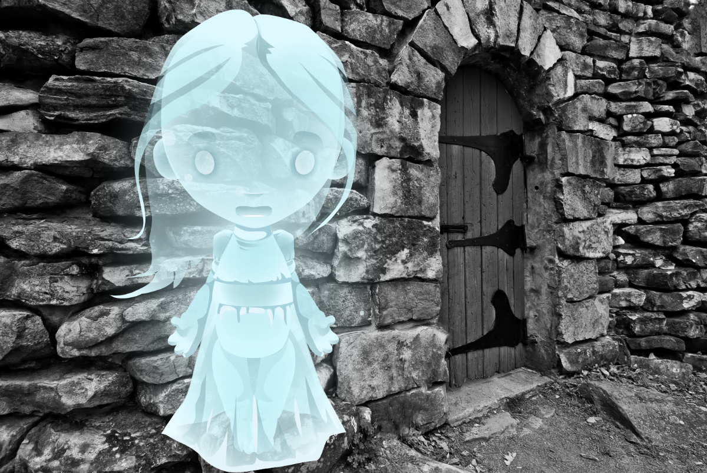

Proyecto 2ª Ev. - Decimales en un castillo


Este obra está bajo una licencia de Creative Commons Reconocimiento-NoComercial-CompartirIgual 4.0 Internacional.

Este obra está bajo una licencia de Creative Commons Reconocimiento-NoComercial-CompartirIgual 4.0 Internacional.
Como veis o deberíais ver, estáis encerrados en el salón de un gran castillo. Queréis escapar y salir al exterior. Para ello sabéis que lo primero que tenéis que hacer es conseguir abrir la puerta del salón donde os encontráis actualmente.
Pero ahí no acabará todo. El castillo tiene 10 pasillos y cada uno de ellos conduce a una puerta con un código que solo os abrirá si marcáis la contraseña correcta. ¡Y solo una de estas puertas lleva al exterior!
¿Ha quedado claro? Primero salir del salón, después elegir el pasillo correcto y por último, conseguir la contraseña que abre la puerta al exterior.
¿Conseguiréis salir del salón? ¿Conseguiréis dar con el pasillo y la puerta correctos? ¿Conseguiréis la contraseña para salir del castillo? ¿Qué grupo saldrá antes?
Cada miembro del grupo tendrá una misión pero todo el grupo deberá trabajar en la tarea y ayudar al resto para lograr salir del castillo.
De cara a la calificación de la segunda evaluación, este proyecto supone un 17,5% de la nota, repartido de la siguiente manera:
- 2,5% Trabajo en equipo.
- 2,5% Apuntes y explicación realizada durante la fase de preparación.
- 5% Cuestionario individual con preguntas para salir del salón.
- 5% Ficha con prueba para encontrar el número del pasillo correcto.
- 2,5% Ficha con prueba para conseguir contraseña de salida al exterior.
Además:
- Parte del 10% de la actitud y trabajo diario.
- Parte del 2,5% del cuestionario de autorregulación (caritas).
¡Hola de nuevo!

Dentro de unos días me volveré a pasar por el salón. Ese día os plantearé una serie de preguntas, si contestáis bien, haré la vista gorda mientras salís del salón y recorréis los pasillos del castillo resolviendo las otras pruebas para intentar escapar. Si no conseguís salir antes de que suene la música de final de la clase, os quedaréis encerrados en este castillo de decimales una temporadita más (o para siempre).
He acordado con vuestra profesora el día en el que os daré la oportunidad de escapar (ella os lo puede decir). Como aún os queda un tiempo, voy a dejaros un guion para que os preparéis siguiendo mis instrucciones y ayudaros un poquito, que seguro que falta os hace.
1º- Dividid el grupo en parejas, cada pareja irá a un ordenador/. A partir de aquí cada pareja seguirá unos pasos
2º- Buscad información de las partes de los números decimales y cómo se llama cada posición tras la coma. Tenéis que entenderla. Después, rellenad el apartado de los apuntes correspondiente.
3º- Buscad información de cómo representar números decimales sobre la recta numérica. Tenéis que entenderla. Después, rellenad el apartado de los apuntes correspondiente.
4º- Buscad información sobre cómo ordenar los números decimales (de menor a mayor o al revés). Tenéis que entenderla. Después, rellenad el apartado de los apuntes correspondiente.
2º- Buscad información para saber qué es aproximar un número decimal y qué dos tipos de aproximación podemos realizar (truncar y redondear). Tenéis que entenderla. Después, rellenad el apartado de los apuntes correspondiente.
3º- Buscad información sobre cómo se lleva a cabo cada una de las aproximaciones. Tenéis que entenderla. Después, rellenad el apartado de los apuntes correspondiente.
4º- Buscad información sobre qué tipos de decimales existen. Tenéis que entenderla. Después, rellenad el apartado de los apuntes correspondiente.
5º- Para la pareja que haya llegado a este punto:
- Debéis buscar información sobre el apartado 1.4. de los apuntes, entenderla y, después, rellenar los apuntes correspondientes.
6º- Para todos los miembros del equipo:
Tenéis que dominar el tema que os ha tocado para el próximo día explicárselo a vuestros compañeros de la otra pareja y así todos podáis contestar a las preguntas de la guardiana el día correspondiente.
7º- La pareja A deberá explicar a la B las preguntas relacionadas con su parte y viceversa.
8º- Todos los miembros del grupo deben completar sus apuntes.
9º- Tenéis que completar la información del recuadro gris de los apuntes (el que está justo encima del apartado 2).
10º- Vuestra profesora os va a entregar e indicar qué actividades debéis realizar. Cada uno debe escribir en su cuaderno, ayudándoos entre todos. Si lo necesitáis podéis seguir usando el ordenador, la tablet o buscar en vuestro libro.
¿Seguro que habéis salido ya del salón?

Primero, debéis resolver las operaciones que os dé por haber superado las preguntas anteriores.
De entre todos los resultados de las operaciones:
– De los resultados a los apartados a y c, coged las cifras de las décimas y sumadlas. Os dará un número de varias cifras. Sumad sus cifras de nuevo tantas veces como sea necesario hasta que el resultado sea de una cifra.
– De los resultados a los apartados b y d, coged las cifras de las milésimas y sumadlas. Os dará un número de varias cifras. Sumad sus cifras de nuevo tantas veces como sea necesario hasta que el resultado sea de una cifra.
– Resta los dos números anteriores.
El número obtenido deberá ser del 0 al 9, ¡el número del pasillo buscado!
¿Qué pasillo vais a seguir?
Si la puerta queréis abrir, primero, esto tendréis que descubrir:
PARA SABER LA CONTRASEÑA:
Entre todos los miembros del equipo y resolviéndolo cada uno en su cuaderno:
a) Expresa en forma decimal: 1/8 , ¿de qué tipo es el decimal?
b) Expresa en forma decimal: 7/6 , ¿de qué tipo es el decimal?
c) Expresa en forma decimal: 7/3 , ¿de qué tipo es el decimal?
Para conseguir la contraseña que abre la puerta, debéis tener en cuenta las pistas que os aparecieron al averiguar el pasillo:

La contraseña estará formada por números y letras: _ _ _ _ _ _
1º Cifra de las centésimas del resultado de a.
2º Cifra de las cienmilésimas del resultado de b.
3º Cifra de las millonésimas del resultado de c.
4º Primera letra del tipo de decimal del resultado de a.
5º Segunda primera letra del tipo de decimal de b.
6º Segunda primera letra del tipo de decimal de c.
Introducid el código y seréis libres, ¡rápido!
¡Habéis vuelto al instituto!
Ahora que sois libres, preparad vuestros cuadernos y fichas para entregarlos a vuestra profesora.
También, rellenad el cuestionario de cooperativo sobre vuestro grupo de trabajo.
Obra publicada con Licencia Creative Commons Reconocimiento No comercial Compartir igual 4.0